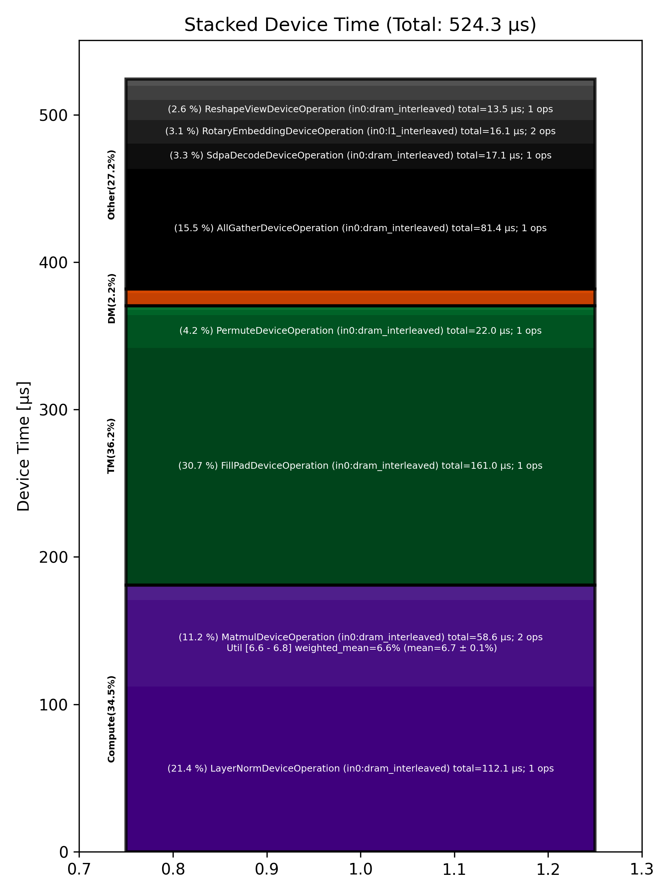

🚀 Performance Report 🚀 ======================== ID Total % Bound OP Code Device Device Time Op-to-Op Gap Cores DRAM DRAM % FLOPs FLOPs % Math Fidelity ------------------------------------------------------------------------------------------------------------------------------------------------------------------------ 26 1.9 % LayerNormDeviceOperation 16 112 μs 1 BF16, BF16 => BF16 57 13.1 % SLOW MatmulDeviceOperation 32 x 2880 x 640 21 44 μs 729 μs 20 47 GB/s 16.5 % 2.7 TFLOPs 6.6 % HiFi2 BF16 x BFP8 => BF16 90 2.9 % NLPCreateQKVHeadsDecodeDeviceOperation 16 5 μs 163 μs 16 BF16 => BF16 129 2.1 % ShardedToInterleavedDeviceOperation 8 1 μs 123 μs 16 BF16 => BF16 153 4.4 % RotaryEmbeddingDeviceOperation 12 8 μs 249 μs 16 BF16, BF16 => BF16 182 4.4 % SliceDeviceOperation 15 2 μs 260 μs 32 BF16 => BF16 222 4.2 % InterleavedToShardedDeviceOperation 11 1 μs 244 μs 16 BF16 => BF16 245 4.2 % PagedUpdateCacheDeviceOperation 23 4 μs 245 μs 16 BF16, BF16 => BF16 283 4.3 % PagedUpdateCacheDeviceOperation 17 4 μs 247 μs 16 BF16, BF16 => BF16 292 4.4 % ShardedToInterleavedDeviceOperation 26 1 μs 255 μs 16 BF16 => BF16 340 4.8 % RotaryEmbeddingDeviceOperation 22 8 μs 271 μs 16 BF16, BF16 => BF16 358 4.2 % SliceDeviceOperation 3 2 μs 246 μs 32 BF16 => BF16 396 5.9 % SdpaDecodeDeviceOperation 30 17 μs 328 μs 72 BF16, BF16 => BF16 433 4.0 % PermuteDeviceOperation 4 22 μs 212 μs 72 BF16 => BF16 467 3.8 % ReshapeViewDeviceOperation 21 14 μs 210 μs 16 BF16 => BF16 484 7.5 % SLOW MatmulDeviceOperation 32 x 512 x 2880 22 15 μs 424 μs 45 112 GB/s 39.0 % 6.3 TFLOPs 6.8 % HiFi2 BF16 x BFP8 => BF16 529 9.5 % AllGatherDeviceOperation 0 81 μs 475 μs 24 BF16 => BF16 555 3.7 % FillPadDeviceOperation 29 161 μs 55 μs 8 BF16 => BF16 583 2.0 % FastReduceNCDeviceOperation 2 10 μs 107 μs 72 BF16 => BF16 634 3.9 % SliceDeviceOperation 16 3 μs 228 μs 72 BF16 => BF16 665 2.2 % BinaryNgDeviceOperation 12 5 μs 126 μs 72 BF16, BF16 => BF16 683 2.8 % BinaryNgDeviceOperation 29 5 μs 157 μs 72 BF16, BF16 => BF16 ------------------------------------------------------------------------------------------------------------------------------------------------------------------------ 100.0 % 22 device ops, 0 host ops, 0 signposts 524 μs 5,355 μs 💡 Advice 💡 ============ High Op-to-Op Gap ---------------- 57 13.1 % SLOW MatmulDeviceOperation 32 x 2880 x 640 21 44 μs 729 μs 20 47 GB/s 16.5 % 2.7 TFLOPs 6.6 % HiFi2 BF16 x BFP8 => BF16 90 2.9 % NLPCreateQKVHeadsDecodeDeviceOperation 16 5 μs 163 μs 16 BF16 => BF16 129 2.1 % ShardedToInterleavedDeviceOperation 8 1 μs 123 μs 16 BF16 => BF16 153 4.4 % RotaryEmbeddingDeviceOperation 12 8 μs 249 μs 16 BF16, BF16 => BF16 182 4.4 % SliceDeviceOperation 15 2 μs 260 μs 32 BF16 => BF16 222 4.2 % InterleavedToShardedDeviceOperation 11 1 μs 244 μs 16 BF16 => BF16 245 4.2 % PagedUpdateCacheDeviceOperation 23 4 μs 245 μs 16 BF16, BF16 => BF16 283 4.3 % PagedUpdateCacheDeviceOperation 17 4 μs 247 μs 16 BF16, BF16 => BF16 292 4.4 % ShardedToInterleavedDeviceOperation 26 1 μs 255 μs 16 BF16 => BF16 340 4.8 % RotaryEmbeddingDeviceOperation 22 8 μs 271 μs 16 BF16, BF16 => BF16 358 4.2 % SliceDeviceOperation 3 2 μs 246 μs 32 BF16 => BF16 396 5.9 % SdpaDecodeDeviceOperation 30 17 μs 328 μs 72 BF16, BF16 => BF16 433 4.0 % PermuteDeviceOperation 4 22 μs 212 μs 72 BF16 => BF16 467 3.8 % ReshapeViewDeviceOperation 21 14 μs 210 μs 16 BF16 => BF16 484 7.5 % SLOW MatmulDeviceOperation 32 x 512 x 2880 22 15 μs 424 μs 45 112 GB/s 39.0 % 6.3 TFLOPs 6.8 % HiFi2 BF16 x BFP8 => BF16 529 9.5 % AllGatherDeviceOperation 0 81 μs 475 μs 24 BF16 => BF16 555 3.7 % FillPadDeviceOperation 29 161 μs 55 μs 8 BF16 => BF16 583 2.0 % FastReduceNCDeviceOperation 2 10 μs 107 μs 72 BF16 => BF16 634 3.9 % SliceDeviceOperation 16 3 μs 228 μs 72 BF16 => BF16 665 2.2 % BinaryNgDeviceOperation 12 5 μs 126 μs 72 BF16, BF16 => BF16 683 2.8 % BinaryNgDeviceOperation 29 5 μs 157 μs 72 BF16, BF16 => BF16 These ops have a >6 μs gap since the previous operation. Running with tracing could save 5229 μs (88.9% of overall time) Alternatively ensure device is not waiting for the host and use device.enable_async(True). Experts can try moving runtime args in the kernels to compile-time args. Matmul Optimization ------------------- 57 13.1 % SLOW MatmulDeviceOperation 32 x 2880 x 640 21 44 μs 729 μs 20 47 GB/s 16.5 % 2.7 TFLOPs 6.6 % HiFi2 BF16 x BFP8 => BF16 - If possible place input 0 in L1 (currently in DEV_2_DRAM_INTERLEAVED) - Output subblock 1x1 is small, try out_subblock_h * out_subblock_w >= 2 if possible - If your matmuls are not FLOP-bound use HiFi4 with BF16 activations for full accuracy 484 7.5 % SLOW MatmulDeviceOperation 32 x 512 x 2880 22 15 μs 424 μs 45 112 GB/s 39.0 % 6.3 TFLOPs 6.8 % HiFi2 BF16 x BFP8 => BF16 - If possible place input 0 in L1 (currently in DEV_2_DRAM_INTERLEAVED) - in0_block_w=2 and output subblock 1x2 look good 🤷 - If your matmuls are not FLOP-bound use HiFi4 with BF16 activations for full accuracy 📊 Stacked report 📊 ==================== Total % Op Code Device Time Sum Op Count Op Category Min FLOPs Max FLOPs Mean FLOPs Std FLOPs Weighted Mean FLOPs -------------------------------------------------------------------------------------------------------------------------------------------------------------------------------- 30.70 % FillPadDeviceOperation (in0:dram_interleaved) 160.97 μs 1 TM 21.39 % LayerNormDeviceOperation (in0:dram_interleaved) 112.14 μs 1 Compute 15.53 % AllGatherDeviceOperation (in0:dram_interleaved) 81.43 μs 1 Other 11.18 % MatmulDeviceOperation (in0:dram_interleaved) 58.61 μs 2 Compute 6.59 % 6.78 % 6.68 % 0.14 % 6.64 % 4.20 % PermuteDeviceOperation (in0:dram_interleaved) 22.04 μs 1 TM 3.27 % SdpaDecodeDeviceOperation (in0:dram_interleaved) 17.12 μs 1 Other 3.06 % RotaryEmbeddingDeviceOperation (in0:l1_interleaved) 16.07 μs 2 Other 2.58 % ReshapeViewDeviceOperation (in0:dram_interleaved) 13.52 μs 1 Other 1.95 % BinaryNgDeviceOperation (in0:dram_interleaved) 10.20 μs 2 Compute 1.84 % FastReduceNCDeviceOperation (in0:dram_interleaved) 9.66 μs 1 Other 1.60 % PagedUpdateCacheDeviceOperation (in0:dram_interleaved) 8.37 μs 2 DM 0.88 % NLPCreateQKVHeadsDecodeDeviceOperation (in0:dram_interleaved) 4.63 μs 1 Other 0.69 % SliceDeviceOperation (in0:l1_interleaved) 3.60 μs 2 TM 0.56 % SliceDeviceOperation (in0:dram_interleaved) 2.94 μs 1 TM 0.38 % ShardedToInterleavedDeviceOperation (in0:height_sharded) 1.98 μs 2 DM 0.20 % InterleavedToShardedDeviceOperation (in0:dram_interleaved) 1.03 μs 1 DM --------------------------------------------------------------------------------------------------------------------------------------------------------------------------------
